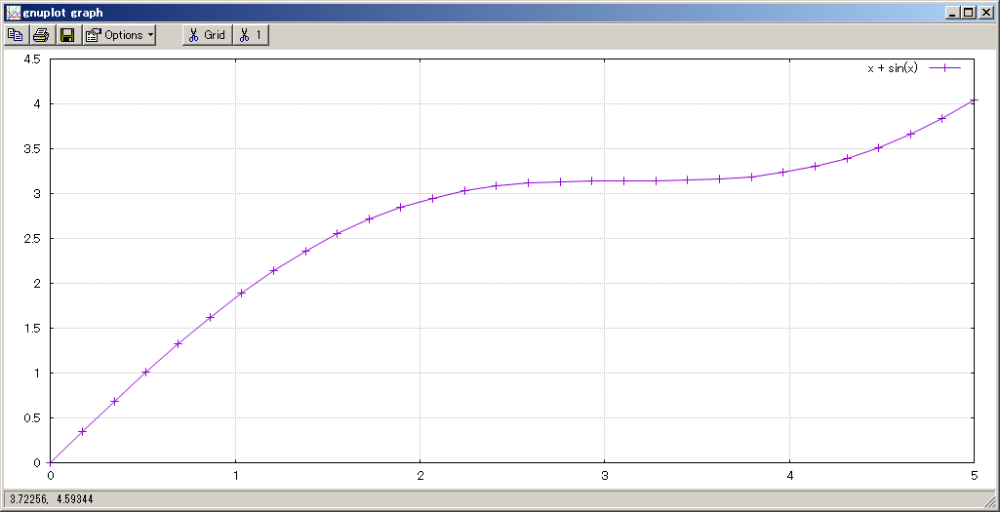

Gnuplot interface を用いたデータの可視化 (全体の目次に戻る)
※以下の内容は必読ではありません．
ここでは
gnuplot-cpp と呼ばれるライブラリを用いることにより、
Eigen のベクトルや行列の値を図として可視化します(gnuplot-cppは単なるヘッダーファイルです)．
Gnuplotのインストール
gnuplot-cppを利用するには、描画ツールの一つである
Gnuplot
をインストールする必要があります．
- Windowsではexe形式でダウンロードして下さい．デフォルトのインストール設定で問題ありません．
- Linux/Mac OSXではソースからコンパイルするか、あるいはパッケージからインストールして下さい．
サンプルの実行
ここにサンプルファイルを置きましたので、今までと同様の方法でコンパイルしてください．
コンパイル時の注意点：EigenのインストールPATHを正しく CMakeLists.txt に指定する
コンパイル後に main または main.exe を実行すると以下のグラフが描画できます．

gnuplot-cpp の使用方法については割愛させていただきますが、このグラフは以下に示すように非常にシンプルなコードで生成できます：
VectorXd x = VectorXd::LinSpaced(30, 0, 5); // 0から5までの値を30等分
VectorXd y = x.array() + x.array().sin();
Gnuplot gp;
gp.set_grid().set_style("linespoints");
gp.plot_xy(x, y, "x + sin(x)");